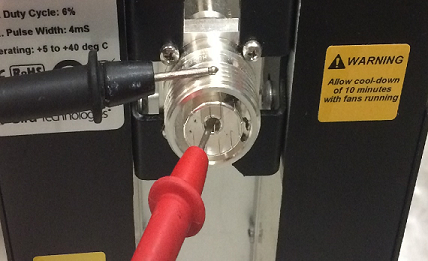

- 00000018WIA304A9D30GYZ
- id_20128505.5
- Jul 28, 2025 6:23:52 PM
Dummy load resistance check and setup
About this task
| DANGER | |
|---|---|
Procedure
- Use a DVM to measure the resistance of input to the dummy load.
- Measure directly on the dummy load input connector – center pin to GND.
Figure 1. Measure dummy load input resistance 
- Make sure that the resistance measures 50Ω ± 5Ω.
Notice 
- Measure directly on the dummy load input connector – center pin to GND.